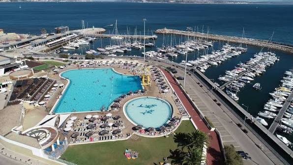
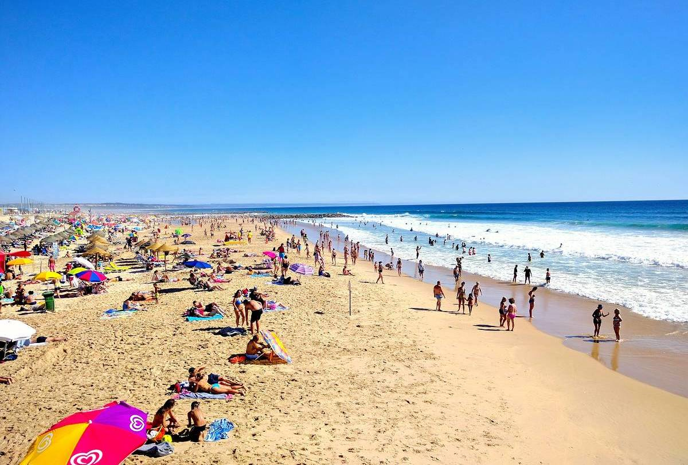

Lisbon Beaches & Coastal Pools
Soak up the Portuguese sun, ride Atlantic waves, and cool off in oceanfront saltwater pools along the stunning Lisbon coastline.
 Student Surf Hub
Student Surf Hub
Praia de Carcavelos
Lisbon's premier wide sandy beach, ideal for sunbathing, beach volleyball, surf lessons, and lively oceanfront beach bars.
- Carcavelos (20-min train from Cais do Sodré)
- Free Access

Saltwater PoolPiscina Oceânica de Oeiras
A modern oceanfront saltwater pool complex with diving boards, sun loungers, and filtered Atlantic seawater right next to Praia da Torre.
- Marina de Oeiras, Praia da Torre
- €8 – €14 (Half-day / Student discounts available)

Endless SandCosta da Caparica
An endless 26 km stretch of golden beaches across the Tagus River, famous for surf schools, sunset beach parties, and rustic chiringuitos.
- Costa da Caparica, Almada
- Free Access (Direct bus or Ferry + Bus)
Erasmus Local Tip
The train line Linha de Cascais (from Cais do Sodré) is completely covered by your Navegante Pass! If you want to head to Costa da Caparica, hop on the direct Carris Metropolitana bus 3710 from Sete Rios or Marquês de Pombal to cross the iconic 25 de Abril Bridge in around 25 minutes.